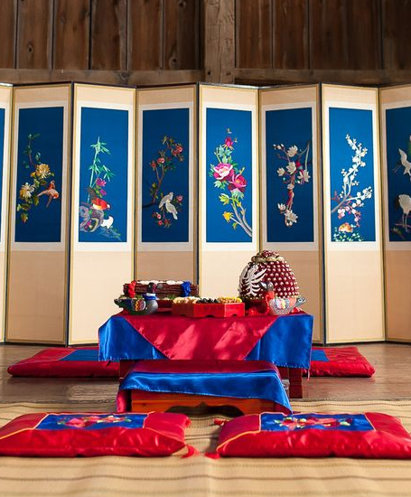

자격과정
자격과정
home > 자격과정 > 전통혼례지도사
전통혼례지도사
Traditional Wedding Instructor
전통혼례지도사 양성과정
우리 가정의례인 전통혼례를 현대화하고 작은 결혼식으로 대중화하여 건전한 혼례문화 보급과 함께 한국전통문화예절원협동조합에서 전통혼례 전문집례ㆍ집사로 활동할 수 있는 일자리 창출 교육 과정입니다.

연수 교육과정 안내
| 구분 | 내용 | 비고 |
|---|---|---|
| 교육일정 |
|
|
| 교육내용 |
|
|
| 지도교수 |
|
|
| 교육대상 |
|
|
| 교육정원 |
|
|
| 교육비 |
|
|
| 특전 |
|